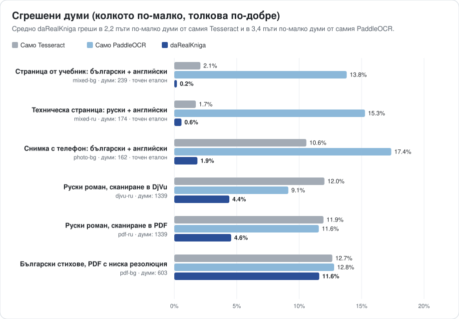

daRealKniga
Превръща стари книги, архиви и всекидневни документи в точни дигитални копия, в които може да се търси. Създадена за славянските езици и английския, дори смесени на една страница.
„Да, истинска книга“: с истински текст, в който може да се търси.

Истинско изпълнение: снимка с телефон на входа, PDF с търсене на изхода и обикновен OCR на същата снимка за сравнение (интерфейсът е на английски; програмата е достъпна и на български).
Какво прави
PDF с търсене
Превръща книги в DjVu, PDF файлове от изображения, снимки и сканирания в PDF, в който текстът може да се търси, маркира и копира. Записва и обикновен текстов файл, а за книгите в DjVu — DjVu с търсене.
Кирилица и латиница, смесени
В учебници, речници и двуезични документи всяка дума остава в своята азбука. Еднаквите на вид букви (а/a, р/p, Н/H) вече не развалят търсенето.
Не само сканирания, но и снимки
Извитите, наклонени и засенчени страници от телефон първо се изправят и почистват, а всички страници стават с еднакъв размер.
Вашият език, вашият компютър
Интерфейсът е на 31 езика, включително всички славянски. Всичко работи на вашия компютър: документите ви не го напускат.
За стари книги и архиви
daRealKniga е създадена за дигитализиране на цели книги и колекции така, както биха ги искали библиотеките и архивите: вярно на оригинала, еднообразно и с търсене.
Оригиналът остава непокътнат
Сканиранията в DjVu запазват изображенията на страниците точно такива, каквито са, като се добавя само невидим текстов слой. До тях се записват PDF и текстов файл.
Цели книги, а не отделни страници
Стотици страници се обработват паралелно. Прекъсната обработка продължава оттам, докъдето е стигнала, а с диапазон от страници можете първо да изпробвате настройките на няколко страници.
Стар печат, различни сканирания
Всички страници стават с еднакъв размер, дори когато сканиранията се различават. Изпробвана върху български и руски издания от 70-те години спрямо съществуващия им текст.
Готово за каталога и поверително
Заглавието и авторът се записват в PDF файла. Всичко работи на вашия компютър: колекциите не го напускат, а форматите са отворени (PDF, DjVu, обикновен текст).
По-добра от обикновения OCR
Всеки образец се чете по три начина от едни и същи изображения на страниците: само с Tesseract, само с PaddleOCR и с daRealKniga, която почиства страниците, съчетава двете програми дума по дума и поправя грешките им.
Средно daRealKniga греши в 2,2 пъти по-малко думи от самия Tesseract и в 3,4 пъти по-малко думи от самия PaddleOCR.

| Образец | Само Tesseract | Само PaddleOCR | daRealKniga |
|---|---|---|---|
| Страница от учебник: български + английскисинтетично сканиране на страница от учебник: български текст с английски думи и изречения | 97,9% | 86,2% | 99,8% |
| Техническа страница: руски + английскисинтетично сканиране на страница от ръководство: руски текст с английски термини, команди и имена | 98,3% | 84,7% | 99,4% |
| Снимка с телефон: български + английскисинтетична снимка на страница от пътеводител (извита, в перспектива, при неравна светлина): български текст с английски имена и изрази | 89,4% | 82,6% | 98,1% |
| Руски роман, сканиране в DjVuрежим за DjVu сканирания, руска проза (Вазов, „Под игом“, 1970) | 88,0% | 90,9% | 95,6% |
| Руски роман, сканиране в PDFPDF от същото издание (изрязани плоски сканирания); еталонът е текстовият слой на DjVu | 88,1% | 88,4% | 95,4% |
| Български стихове, PDF с ниска резолюциябългарска поезия и проза, разгърнати страници при 133 dpi (Вазов, „Събрани съчинения“, т. 4, 1974); самият еталон съдържа много грешки от OCR | 87,3% | 87,2% | 88,4% |
Точност по думи: делът на думите, прочетени напълно вярно. Латинска буква на мястото на подобна кирилска се брои за грешка, защото думата вече не може да се намери с търсене.
Думи, които обикновеният OCR чете грешно
| Отпечатано | Само Tesseract | Само PaddleOCR | daRealKniga |
|---|---|---|---|
| а | a | – | а ✓ |
| open | ореп | ореn | open ✓ |
| монастырских | мопастырских | мопастырскнх | монастырских ✓ |
| внимание | впимание | вшнмание | внимание ✓ |
| наполняя | паполпяя | паполняя | наполняя ✓ |
| стену | степу | – | стену ✓ |
| них | пих | пих | них ✓ |
| са | ca | са ✓ | са ✓ |
| нов | HOB | нов ✓ | нов ✓ |
| от | OT | от ✓ | от ✓ |
| or | ог | or ✓ | or ✓ |
| да | na | да ✓ | да ✓ |
Отбелязаните букви са от другата азбука: на екрана изглеждат същите, но думата не може да се намери с търсене.
Измерено на 2026-10-08 с daRealKniga 0.3.0, Tesseract 5.3.4 и PaddleOCR 3.7.0. И трите четат едни и същи изображения на страниците с едни и същи модели за OCR.
Образците, начинът на оценяване и как да повторите проверката сами са описани в README (на английски).
Изтегляне
Безплатна и с отворен код (MIT). При първото пускане се изтеглят моделите за OCR: около 45 MB и още 10–15 MB за всеки език.
Linux
Един файл, в който има всичко. Направете го изпълним и го отворете с двойно щракване. Работи на 64-битови дистрибуции от около 2022 г. нататък.
Изтеглете AppImagemacOS в разработка
Apple Silicon и Intel. Инсталира се с Homebrew и няколко команди в Terminal.
Инсталиране на macOSWindows в разработка
64-битови Windows 10 и 11. Инсталира се с няколко команди в PowerShell.
Инсталиране на WindowsПоддръжката на macOS и Windows е нова: ако нещо не работи или указанията не са ясни, моля, пишете ни. Отзивите ви са много ценни.
Как се използва
Отворете прозореца, пуснете документ, изберете езика на текста и натиснете Разпознай текста. Или използвайте командния ред (drk е кратката форма на darealkniga):
drk make book.djvu --lang bul+eng | Български учебник с английски текст |
drk make book.pdf --lang bul --title "Под игото" --author "Иван Вазов" | Българска книга; заглавието и авторът се записват в PDF файла |
drk make receipt.jpg --lang ukr+eng | Една снимка: касова бележка, писмо, бележка |
drk make phone-photos/ --lang rus | Папка със снимки на страници, по ред |